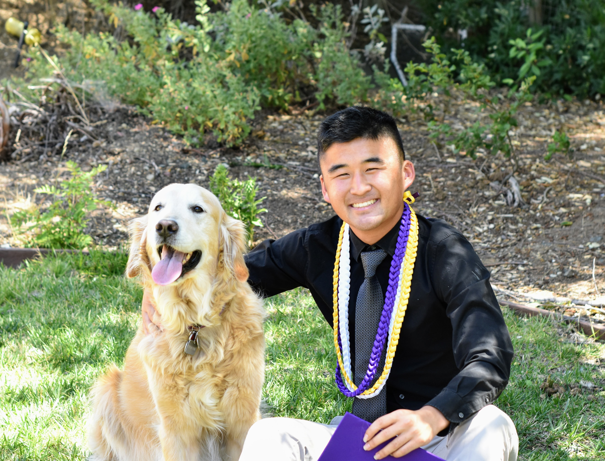
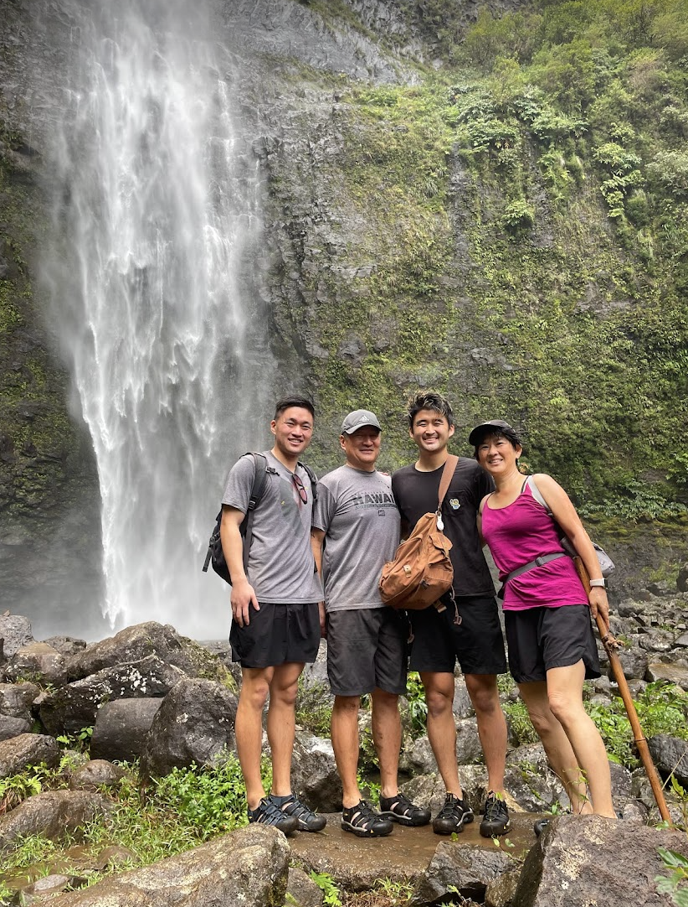

My Who and Why
Hi! My name is Kyle Tsujimoto (he/him), and I'm a Physiological Science Major and Asian American Studies Minor at UCLA. I'm interested in learning more about digital mapmaking and ways I can best apply it to serve my community. I'm invested in issues in the Japanese American community, especially gentrification and community health, and I aspire to find and represent data from and by the community through digital maps.


My Interests
- Running
- Photography
- Eating Spicy Food